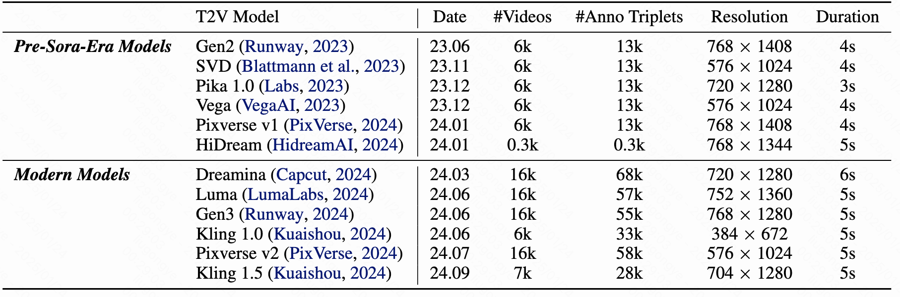
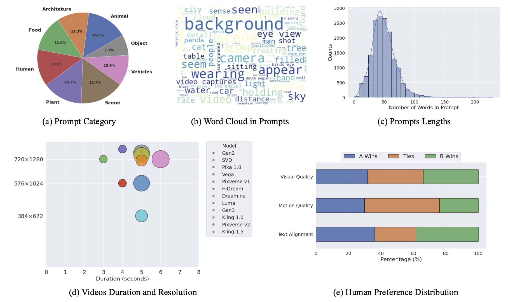
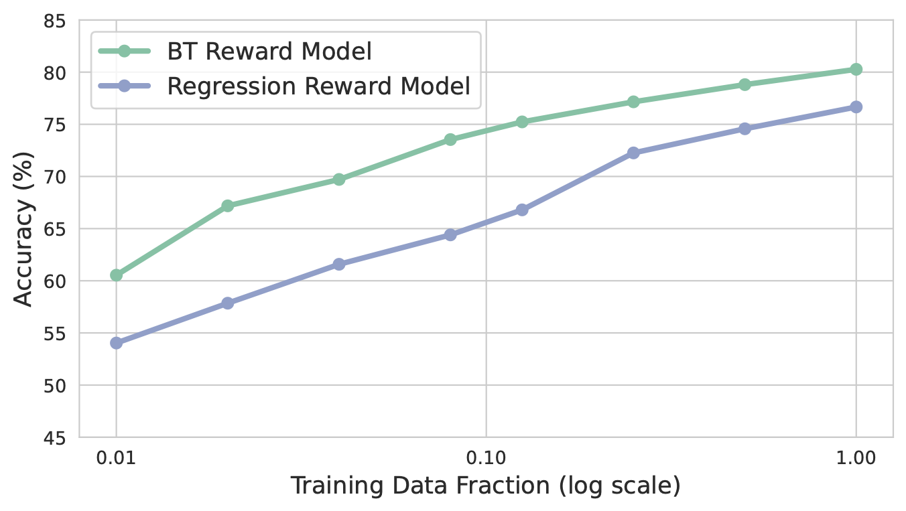
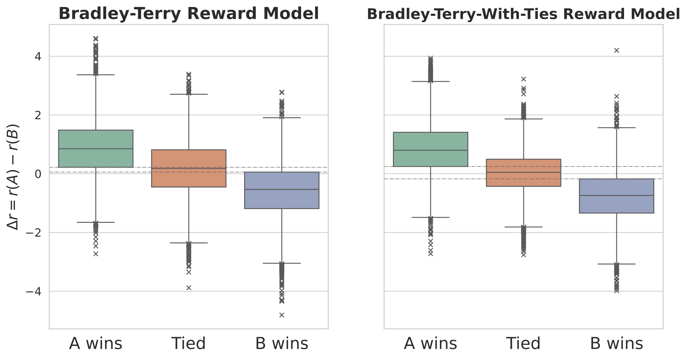
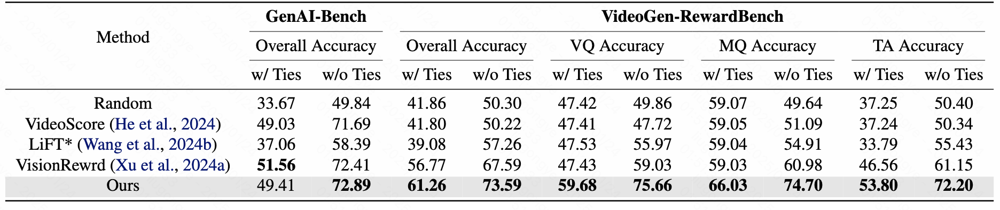

We utilized 12 text-to-video models to generate a total of 108k videos from 16k unique prompts. This process ultimately resulted in 182k annotated triplets, each consisting of a prompt paired with two videos and corresponding preference annotations.
Annotators are asked to perform pairwise assessments across three critical dimensions: Visual Quality (VQ), Motion Quality (MQ), and Text Alignment (TA). For each dimension, annotators are presented with a prompt and two generated videos, and asked to provide choices indicating their preference (A wins/Ties/B wins).
In addition to pairwise annotations, we also conduct pointwise annotations using a similar procedure, where annotators rate each video on a Likert scale from 1 to 5 for the same three dimensions (i.e., VQ, MQ, TA). This dual annotation setup enables us to explore the advantages and limitations of pairwise preferences versus pointwise scores as annotation strategies.


Score Regression v.s. Bradley-Terry. Given that our training dataset includes both pointwise scores and pairwise preferences, we investigate two types of reward models: Score Regression and Bradley-Terry. We find that the BT model consistently outperforming the regression model across various dataset sizes. While as the dataset size increases, the performance gap between the two models narrows.

Ties matters. The importance of tie annotations is often overlooked in BT models. We find that the inclusion of tie annotations significantly improves the robustness of the reward model. We adopt Bradley-Terry model with ties(BTT) instead of the traditional BT model to capture the human preferences.

Separation for Decoupling. We observe that a shared token for multi-dimensional rewarding tends to cause coupling between context-agnostic dimensions (e.g., VQ and MQ) and input context. We adopt separate tokens for each dimension to ensure an independent evaluation for context-agnostic dimensions.
VideoGen-RewardBench. Current evaluation benchmarks for human annotations are limited in videos generated by pre-Sora-era T2V models. We manually construct 26.5k triplets and hire annotators to provide pairwise preference labels. Additionally, annotators are asked to assess the overall quality between the two videos, serving as a universal label for evaluating across various reward model despite their specific-dimensions.
We visualize the model coverage across the training sets of different methods and the two evaluation benchmarks:
Evaluations across reward models. We employs two primary benchmarks for evaluation. (1) VideoGen-RewardBench, serving as a modern benchmark to evaluate the performance of reward models on latest T2V models. (2) VideoGen-Eval, serving as a complementary benchmark to evaluate the performance of reward models on pre-Sora-era T2V models. Two accuracy metrics are reported: ties-included accuracy and ties-excluded accuracy. Results among different reward models are compared.

From a unified RL perspective:
$$\max_{p_\theta} \mathbb{E}_{\mathbf{y} \sim \mathcal{D}_c, \mathbf{x}_0 \sim p_\theta(\mathbf{x}_0 \mid \mathbf{y})} \left[ r(\mathbf{x}_0,\mathbf{y}) \right] \notag - \beta \, \mathbb{D}_{\text{KL}} \left[ p_\theta(\mathbf{x}_0 \mid \mathbf{y}) \,\|\, p_{\text{ref}}(\mathbf{x}_0 \mid \mathbf{y}) \right]$$We generalize the three alignment algorithms to flow-based models. These include two training-time strategies (Flow-DPO and Flow-RWR) and one inference-time technique (Reward Guidance).
Flow-DPO:
$$ \begin{align} \mathcal{L}_\text{DPO}(\theta) = - \mathbb{E} \Bigg[ \log \sigma \Bigg(& -\frac{\beta_t}{2} \Big(\| \mathbf{v}^w - \mathbf{v}_\theta(\mathbf{x}_{t}^w, t)\|^2 - \|\mathbf{v}^w - \mathbf{v}_\text{ref}(\mathbf{x}_{t}^w, t)\|^2 \notag \\ &\quad - \bigl(\|\mathbf{v}^l - \mathbf{v}_\theta(\mathbf{x}_{t}^l, t)\|^2 - \|\mathbf{v}^l - \mathbf{v}_\text{ref}(\mathbf{x}_{t}^l, t)\|^2 \bigr) \Big) \Bigg) \Bigg], \end{align} $$Flow-RWR:
$$ \begin{align} \mathcal{L}_\text{RWR}(\theta) &= \mathbb{E} \bigl[\exp(r(\mathbf{x}_0, \mathbf{y}))\|\mathbf{v} - \mathbf{v}_\theta(\mathbf{x}_{t}, t, \mathbf{y})\|^2\bigr], \end{align} $$Reward Guidance:
$$ \tilde{\mathbf{v}}_t(\mathbf{x}_t \mid \mathbf{y}) = \mathbf{v}_t(\mathbf{x}_t \mid \mathbf{y}) - w \,\frac{t}{1 - t}\,\nabla r(\mathbf{x}_t, \mathbf{y}), $$We make comparisons among the three alignment algorithms along with the baseline models and SFT. We find that Flow-DPO outperforms the other algorithms in our setting. An interesting observation is that Flow-DPO with a constant β outperforms the one with a timestep dependent β, while the latter is a direct derivation from the Diffusion-DPO algorithm. Timestep dependent β may cause uneven training across different timesteps, since T2V models utilize shared model weights for various noise levels.
We showcase part of the results after alignment by Flow-DPO with a constant β:
A cowboy rides his horse across an open plain at sunset, with the camera capturing the warm colors of the sky and the soft light on the landscape.
A pair of animated sneakers with eyes and a mouth and a talking basketball with a face playing a game of one-on-one on an urban basketball court. The sneakers are dribbling and making quick moves, while the basketball is bouncing and trying to score. The court is surrounded by graffiti-covered walls and cheering spectators
A mechanical knight with steam-powered joints standing guard at an ancient castle gate. Gears whir softly as its head turns to scan the surroundings, while steam occasionally escapes from its armor joints.
A wandering alchemist with potion-filled vials clinking on their belt, gathering herbs in an enchanted forest where mushrooms glow and flowers whisper secrets
The camera follows a person standing alone by the lake, gazing at the distant sunset, with their reflection mirrored on the water’s surface.
The camera remains still, a woman with long brown hair and wearing a pink nightgown walks towards the bed in the bedroom and lays on it, the background is a cozy bedroom, warm evening light.